<title>PartnerETA Short Tiles</title>
<meta name="claude:viewport-fit-sides" content="cover">
<link rel="stylesheet" href="https://fonts.googleapis.com/css2?family=IBM+Plex+Sans+Condensed:wght@500;600&family=IBM+Plex+Sans:wght@400;500;600&family=IBM+Plex+Mono:wght@400&display=swap">
<style>
/* Layout: one column of decisions; each shows today vs after, light first, dark under it. */
:root {
  --bg: #eef1f4; --card: #ffffff; --fg: #1b2026; --muted: #5a6470; --line: #d3d9df;
  --accent: #0dba75; --warn: #c2410c; --tile-edge: #7d7d7d;
  --display: "IBM Plex Sans Condensed", "Arial Narrow", sans-serif;
  --body: "IBM Plex Sans", system-ui, sans-serif;
  --mono: "IBM Plex Mono", ui-monospace, monospace;
}
@media (prefers-color-scheme: dark) { :root:not([data-theme="light"]) {
  --bg: #15181c; --card: #1e2227; --fg: #e8ecf0; --muted: #9aa5b1; --line: #343b43; --accent: #2fd08f; --warn: #fb923c; color-scheme: dark } }
:root[data-theme="dark"] { --bg: #15181c; --card: #1e2227; --fg: #e8ecf0; --muted: #9aa5b1; --line: #343b43; --accent: #2fd08f; --warn: #fb923c; color-scheme: dark }
body { background: var(--bg); color: var(--fg); font: 15px/1.55 var(--body); }
main { max-width: 1040px; margin: 0 auto; padding-block: 32px 64px;
  padding-left: max(16px, env(safe-area-inset-left, 0px)); padding-right: max(16px, env(safe-area-inset-right, 0px));
  display: grid; gap: 36px; }
h1, h2 { font-family: var(--display); font-weight: 600; text-wrap: balance; margin: 0; }
h1 { font-size: 2rem; letter-spacing: .01em; }
h2 { font-size: 1.35rem; }
p { margin: 0; max-width: 68ch; }
.lede { display: grid; gap: 10px; }
.eyebrow { font: 600 .75rem var(--display); text-transform: uppercase; letter-spacing: .08em; color: var(--muted); }
section { display: grid; gap: 14px; }
.pair { display: grid; grid-template-columns: repeat(auto-fit, minmax(280px, 1fr)); gap: 16px; }
figure { margin: 0; background: var(--card); border: 1px solid var(--line); border-radius: 10px; padding: 12px; display: grid; gap: 10px; min-width: 0; }
figure img { width: 100%; border-radius: 6px; display: block; }
figcaption { font-size: .9rem; color: var(--muted); }
figcaption b { color: var(--fg); font-family: var(--display); font-weight: 600; letter-spacing: .02em; }
.tiles { display: grid; grid-template-columns: repeat(auto-fit, minmax(240px, 1fr)); gap: 16px; }
.tile { display: grid; gap: 8px; justify-items: start; min-width: 0; }
.tile .stack { display: grid; gap: 8px; }
.tile img { border: 1px solid var(--tile-edge); border-radius: 8px; max-width: 100%; height: auto; }
.mode { font: .75rem var(--mono); color: var(--muted); }
.tag { display: inline-block; font: 600 .72rem var(--display); text-transform: uppercase; letter-spacing: .07em; padding: 2px 8px; border-radius: 99px; border: 1px solid currentColor; }
.ok { color: var(--accent); } .bad { color: var(--warn); }
.measure { font: .85rem var(--mono); color: var(--muted); }
.pick { border: 2px solid var(--accent); }
</style>

<main>
  <header class="lede">
    <span class="eyebrow">PartnerETA · mock round 1 · 11 Nov 2026</span>
    <h1>Short tiles keep the small line</h1>
    <p>New rule: in a short tile the big number gives way, never the small text. Today the ETA field drops “14.2 km left” in one-row tiles (141 px) to keep the clock big. Words that matter (paused, no connection, 3 min ago) already stay. Quarter, half and full tiles don't change.</p>
    <p class="measure">All fields drawn by the app's own code in the field gallery (Karoo 3 emulator, Karoo fonts).</p>
  </header>

  <section>
    <h2>1 · Half-width row (236 × 141)</h2>
    <div class="pair">
      <figure><figcaption><b>Today</b> · no “km left”</figcaption></figure>
      <figure>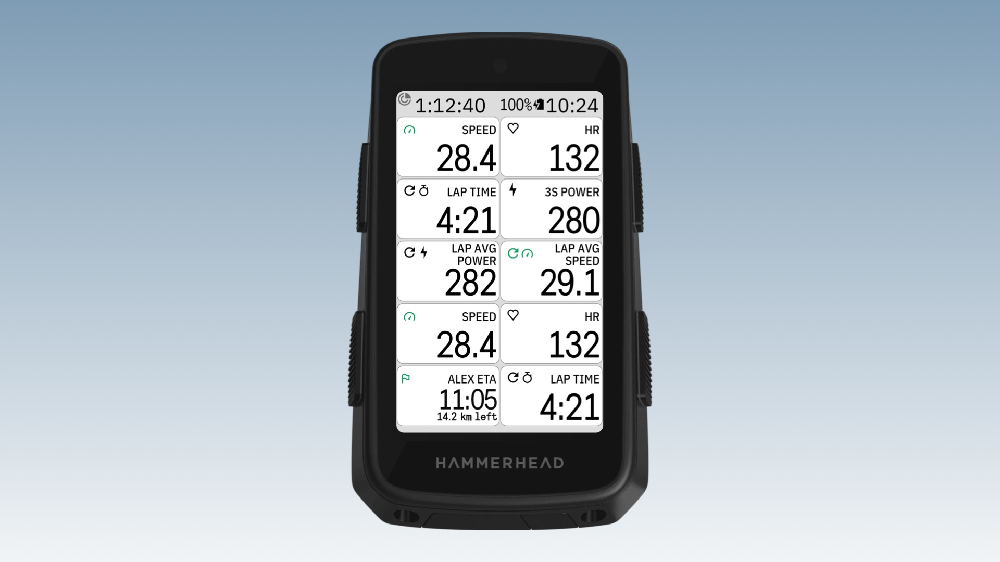<figcaption><b>After</b> · clock gives way, line stays</figcaption></figure>
      <figure>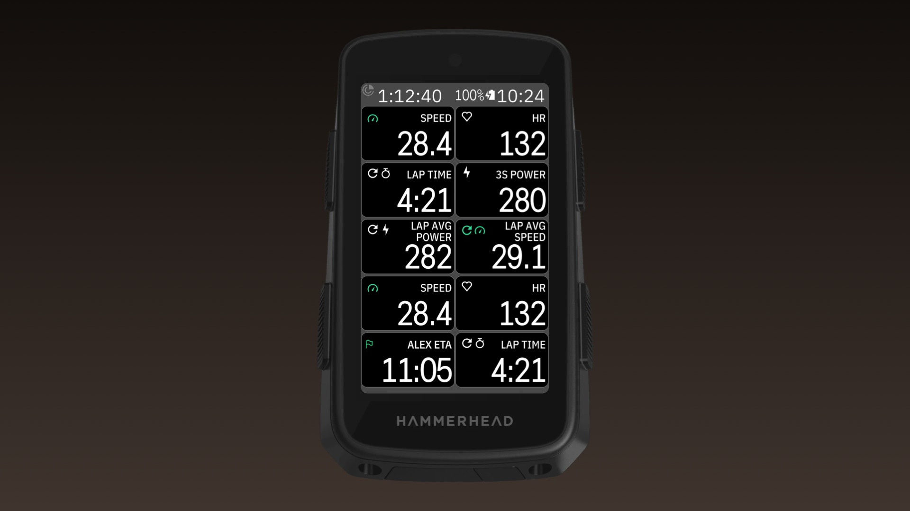<figcaption><b>Today</b> · dark</figcaption></figure>
      <figure>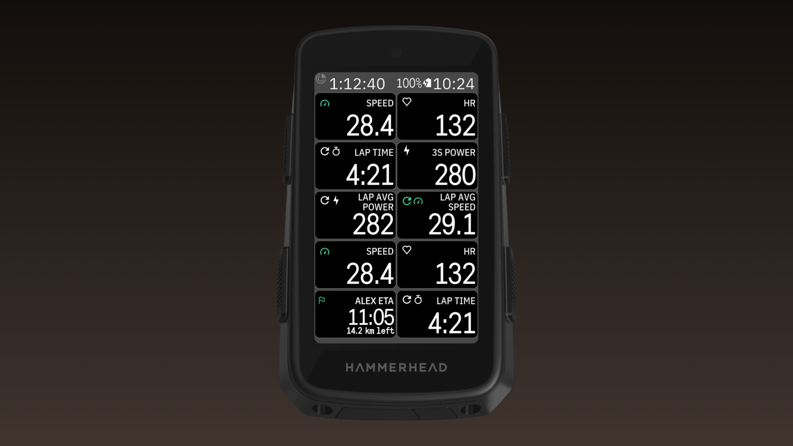<figcaption><b>After</b> · dark</figcaption></figure>
    </div>
  </section>

  <section>
    <h2>2 · Full-width row (478 × 141)</h2>
    <div class="pair">
      <figure>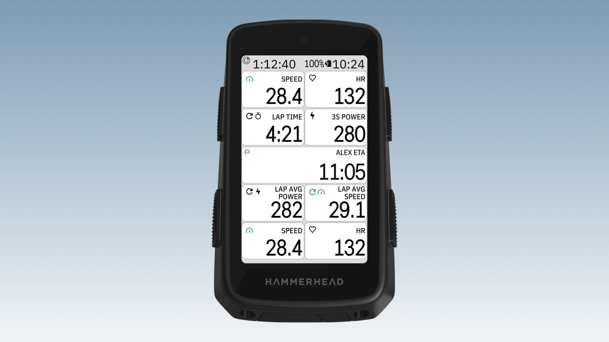<figcaption><b>Today</b></figcaption></figure>
      <figure>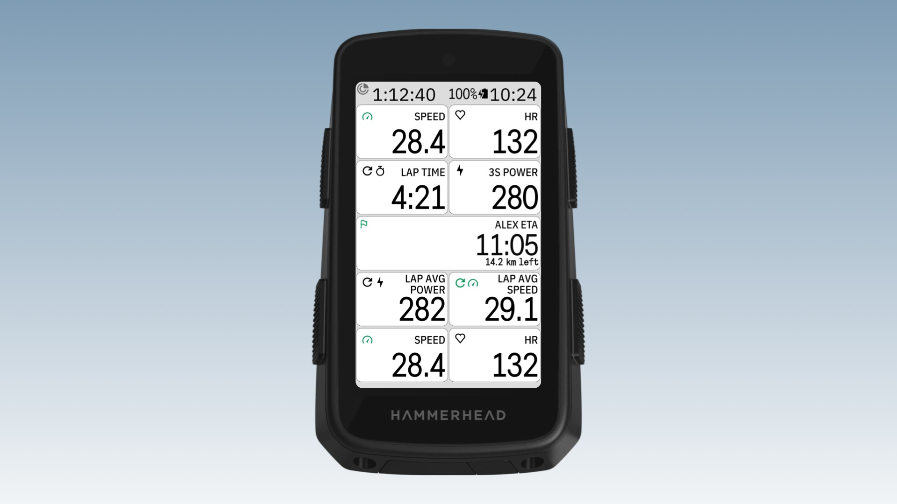<figcaption><b>After</b></figcaption></figure>
      <figure>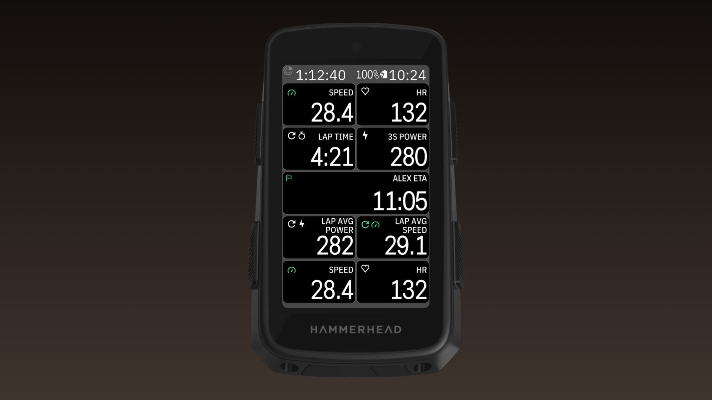<figcaption><b>Today</b> · dark</figcaption></figure>
      <figure>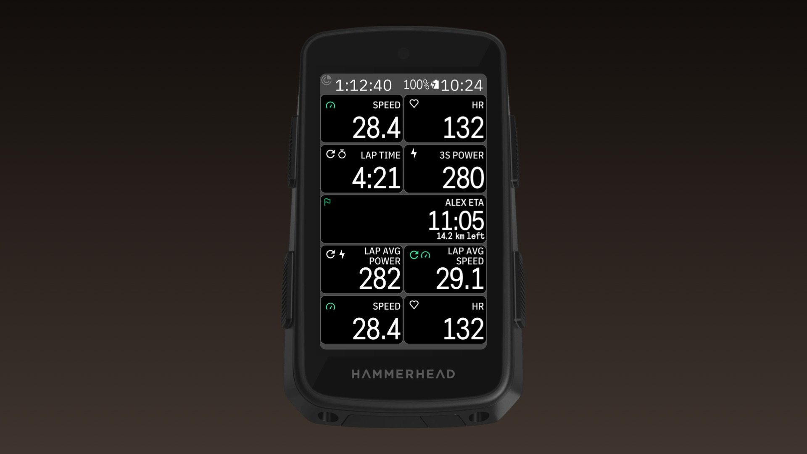<figcaption><b>After</b> · dark</figcaption></figure>
    </div>
  </section>

  <section>
    <h2>3 · Map page: the Karoo shortens the row to 123 px</h2>
    <p>With a route loaded, the Karoo lays a 141 px row out at 123 px and shrinks the picture under the title to fit. If the clock and the line stay one picture (A), the line shrinks with it to about 15 px, under the 16.5 px minimum. In B the line is its own row at true size and only the clock gives way.</p>
    <div class="tiles">
      <div class="tile"><span class="tag">Today</span>
        <div class="stack">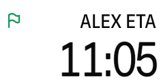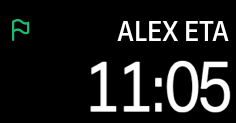</div>
        <span class="measure">clock only</span></div>
      <div class="tile"><span class="tag bad">A · shrink together</span>
        <div class="stack">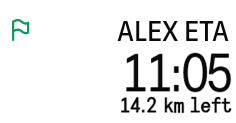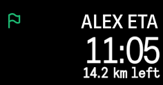</div>
        <span class="measure">line ≈ 15 px · under the minimum</span></div>
      <div class="tile"><span class="tag ok">B · line keeps its size</span>
        <div class="stack">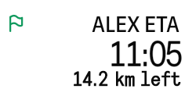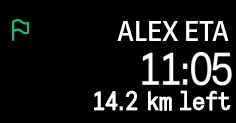</div>
        <span class="measure">line 19 px · clock 33 px</span></div>
    </div>
    <div class="tiles">
      <div class="tile"><span class="mode">full-width, today</span>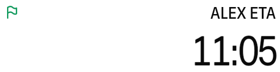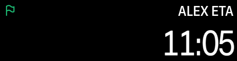</div>
      <div class="tile"><span class="mode">full-width, B</span>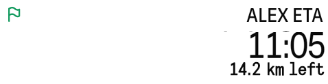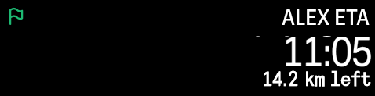</div>
    </div>
  </section>

  <section>
    <h2>Our pick: After + B</h2>
    <p>“14.2 km left” shows in every tile from 112 px up, like the other small lines. In code: the clock and the line become two pictures under the title. The line keeps its size and the clock takes whatever room is left (fitEnd), so the Karoo's shortened map row only shrinks the clock.</p>
  </section>
</main>
